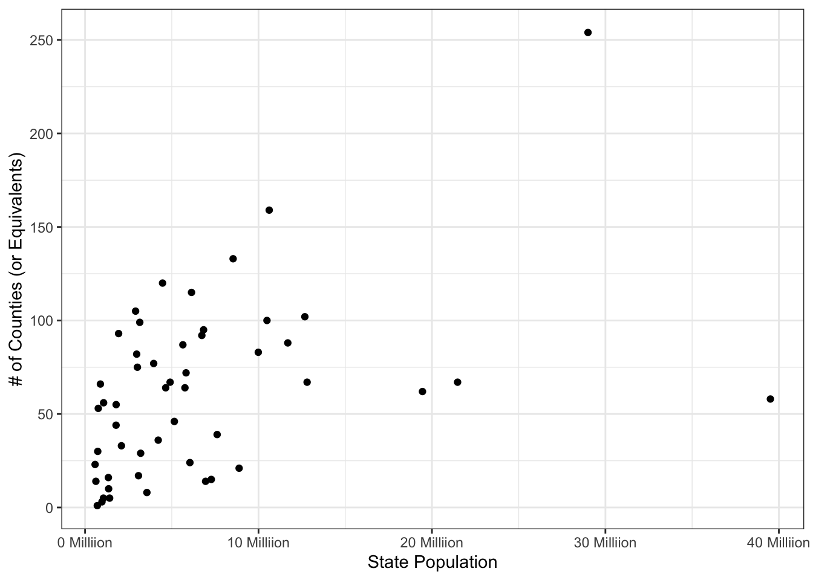
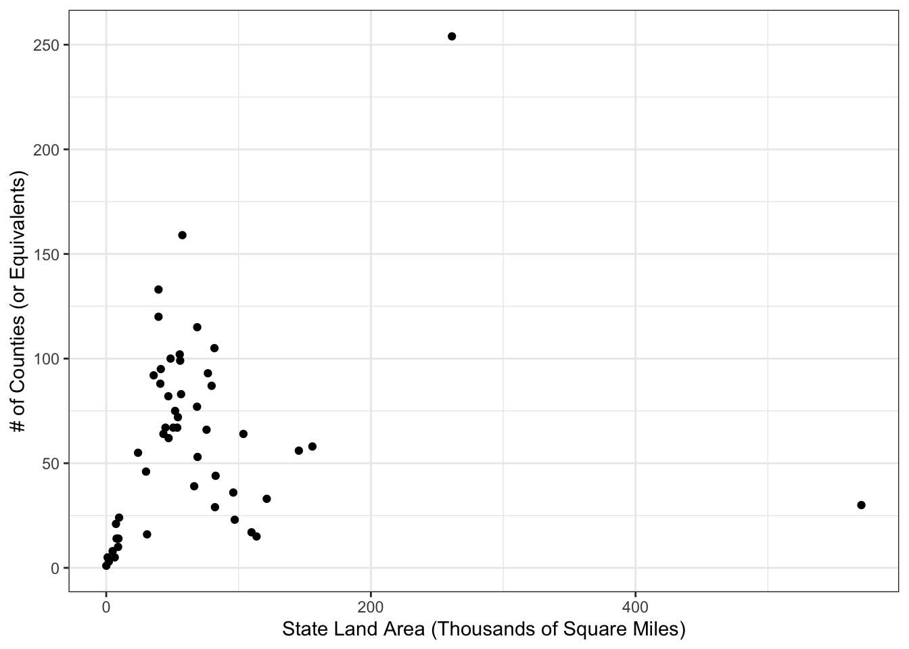
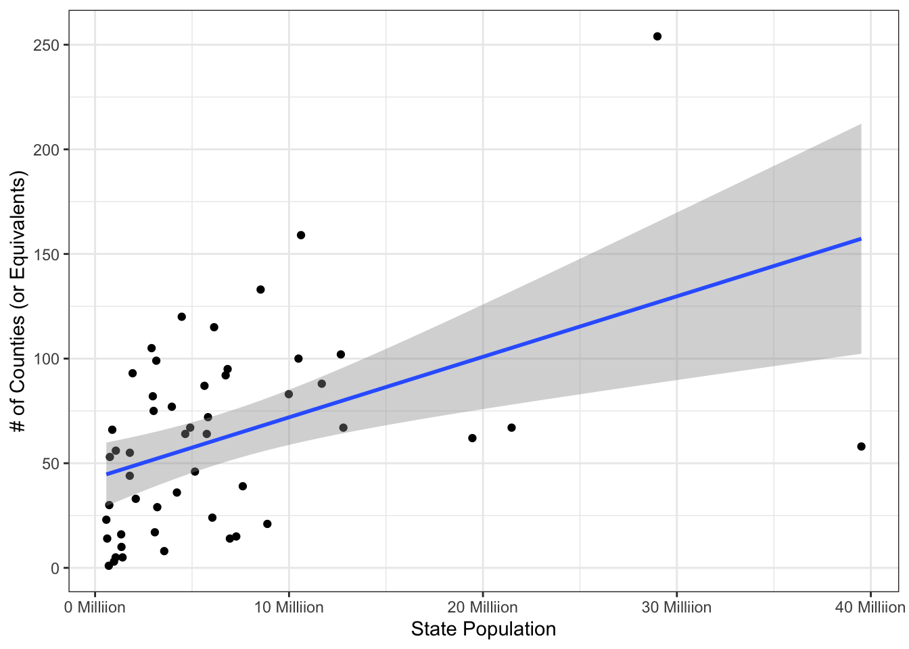
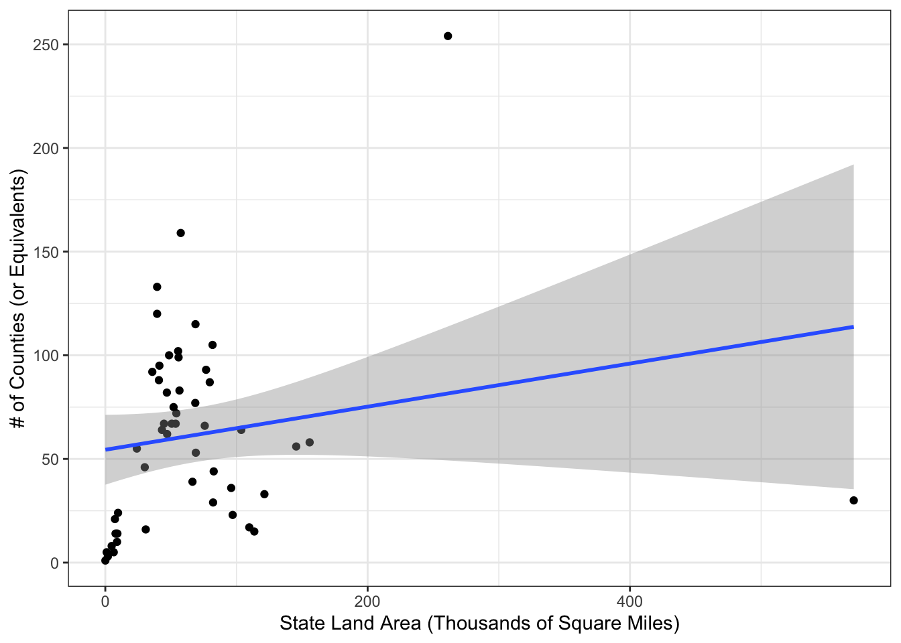

Recently in an advanced methods course my professor was discussing data on some of the most populous counties in the US. She then asked how many counties we thought there were in California (where I am located, and the most populous US state). My initial guess was somewhere between 20 and 30, but a quick google search showed us that there are actually 58 counties in California. This seemed like a lot, but when I researched it further, I found that many other states have much more than California, despite being less populous. In this post, we will webscrape some data from Wikipedia and perform a brief analysis on it in R.
I found a great table on the Wikipedia page located here, under the “Statistics” section. We will use {rvest} and {xml2} to pull the data into R.
First, let’s get our libraries:
library(rvest)
library(dplyr)
library(magrittr)
library(readr)
library(stringr)
library(ggplot2)And then we can read in the data.
url <- "https://en.wikipedia.org/wiki/County_(United_States)"
county_raw <- read_html(url) %>%
html_node("table.wikitable.sortable") %>%
html_table()
head(county_raw)## # A tibble: 6 x 8
## `State, federal … Total Total `Subdivisions[7…
## <chr> <chr> <chr> <chr>
## 1 State, federal d… 2019 … Land… Counties
## 2 Alabama 4,903… 50,6… 67
## 3 Alaska[g] 731,5… 570,… —
## 4 Arizona 7,278… 113,… 15
## 5 Arkansas 3,017… 52,0… 75
## 6 California 39,51… 155,… 58
## # … with 4 more variables:
## # Subdivisions[7] <chr>,
## # Subdivisions[7].1 <chr>, Average <chr>,
## # Average.1 <chr>Now that we have the table in R, we need to clean the data. From the head, we can see that the original column titles got split into the table header and the first row of the data. To fix this, we will remove the first row and then rename all columns. Furthermore, we will convert columns to the correct type and make all area measurements in square miles.
county_clean <- county_raw %>%
set_colnames(
c(
"state",
"population_2019",
"land_area",
"counties",
"equivalents",
"total_subdivisions",
"avg_county_population",
"avg_county_size"
)
) %>%
slice(-1) %>%
mutate(
population_2019 = parse_number(population_2019),
counties = parse_number(counties),
equivalents = parse_number(equivalents),
total_subdivisions = parse_number(total_subdivisions),
avg_county_population = parse_number(avg_county_population),
land_area = str_extract(land_area, "^.* ") %>% parse_number(),
avg_county_size = str_extract(avg_county_size, "^.* ") %>% parse_number()
) %>%
suppressWarnings() %>% # known NA's caused by - in numeric columns
slice(1:51) # just get the 50 states and DC, no territories or totals
head(county_clean)## # A tibble: 6 x 8
## state population_2019 land_area counties
## <chr> <dbl> <dbl> <dbl>
## 1 Alabama 4903185 50645 67
## 2 Alaska[g] 731545 570641 NA
## 3 Arizona 7278717 113594 15
## 4 Arkansas 3017825 52035 75
## 5 California 39512223 155779 58
## 6 Colorado 5758736 103642 64
## # … with 4 more variables: equivalents <dbl>,
## # total_subdivisions <dbl>,
## # avg_county_population <dbl>,
## # avg_county_size <dbl>That looks much better and way more useable. Hooray!
We will explore two main relationships here, the relationship between state population and the number of counties, and the relationship between state land area and the number of counties. Plots of these two relationships are shown below.
county_clean %>%
ggplot() +
aes(x = population_2019, y = total_subdivisions) +
geom_point() +
xlab("State Population") +
ylab("# of Counties (or Equivalents)") +
scale_x_continuous(
labels = function(x) {
str_c(x / 1000000, " Milliion")
}
) +
theme_bw()
county_clean %>%
ggplot() +
aes(x = land_area, y = total_subdivisions) +
geom_point() +
xlab("State Land Area (Thousands of Square Miles)") +
ylab("# of Counties (or Equivalents)") +
scale_x_continuous(
labels = function(x) {
str_c(x / 1000)
}
) +
theme_bw()
We can also look at the correlation between these variables:
cor(county_clean$total_subdivisions, county_clean$population_2019)## [1] 0.4554039cor(county_clean$total_subdivisions, county_clean$land_area)## [1] 0.1901505And maybe even add a regression line to the above plots, although it should be noted that the regression assumptions are definitely not met for either of these relationships. Further analysis would be needed to create a valid model of the relationship.
county_clean %>%
ggplot() +
aes(x = population_2019, y = total_subdivisions) +
geom_point() +
geom_smooth(method = "lm") +
xlab("State Population") +
ylab("# of Counties (or Equivalents)") +
scale_x_continuous(
labels = function(x) {
str_c(x / 1000000, " Milliion")
}
) +
theme_bw()## `geom_smooth()` using formula 'y ~ x'
summary(lm(total_subdivisions ~ population_2019, data = county_clean))##
## Call:
## lm(formula = total_subdivisions ~ population_2019, data = county_clean)
##
## Residuals:
## Min 1Q Median 3Q Max
## -99.290 -35.706 4.335 24.959 127.126
##
## Coefficients:
## Estimate Std. Error t value
## (Intercept) 4.301e+01 7.855e+00 5.476
## population_2019 2.892e-06 8.078e-07 3.581
## Pr(>|t|)
## (Intercept) 1.49e-06 ***
## population_2019 0.000785 ***
## ---
## Signif. codes:
## 0 '***' 0.001 '**' 0.01 '*' 0.05 '.' 0.1 ' ' 1
##
## Residual standard error: 42.04 on 49 degrees of freedom
## Multiple R-squared: 0.2074, Adjusted R-squared: 0.1912
## F-statistic: 12.82 on 1 and 49 DF, p-value: 0.0007853county_clean %>%
ggplot() +
aes(x = land_area, y = total_subdivisions) +
geom_point() +
geom_smooth(method = "lm") +
xlab("State Land Area (Thousands of Square Miles)") +
ylab("# of Counties (or Equivalents)") +
scale_x_continuous(
labels = function(x) {
str_c(x / 1000)
}
) +
theme_bw()## `geom_smooth()` using formula 'y ~ x'
summary(lm(total_subdivisions ~ land_area, data = county_clean))##
## Call:
## lm(formula = total_subdivisions ~ land_area, data = county_clean)
##
## Residuals:
## Min 1Q Median 3Q Max
## -83.740 -37.717 -1.202 26.809 172.419
##
## Coefficients:
## Estimate Std. Error t value
## (Intercept) 5.443e+01 8.386e+00 6.490
## land_area 1.039e-04 7.666e-05 1.356
## Pr(>|t|)
## (Intercept) 4.09e-08 ***
## land_area 0.181
## ---
## Signif. codes:
## 0 '***' 0.001 '**' 0.01 '*' 0.05 '.' 0.1 ' ' 1
##
## Residual standard error: 46.36 on 49 degrees of freedom
## Multiple R-squared: 0.03616, Adjusted R-squared: 0.01649
## F-statistic: 1.838 on 1 and 49 DF, p-value: 0.1814There seems to be a lot that could be done with this data, but here we just showed how to get the data, and performed a brief analysis on it. Hope you found it helpful and interesting!